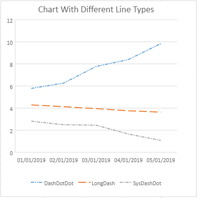

In SpreadJS, you can plot one or more data series while creating a chart. Each series represents an item on the legend. You can get, insert and remove a series item from the series collection of a chart and also customize the series name, border width, border color, yValue, xValue and fill color for each series item using the series method and SeriesCollection class.
Along with this, you can also customize the line type of the data series. The LineDashStyle enumeration can be used for the same and the series line type can be set to solid, squareDot, longDash, dash, sysDashDot, dashDotDot etc. The chart side panel of SpreadJS designer also displays 'Dash type' drop-down field which provides various options to select the line type for chart series.
A basic image with series configuration is shown below.
A basic image with different series line types is shown below.

This code shows how to configure series in a chart.
| JavaScript |
Copy Code
|
|---|---|
//Configure Series var series = chart.series(); var seriesItem = series.get(0); seriesItem.yValues = "Sheet1!$B$5:$E$5"; seriesItem.backColor = "#d3d3d3"; seriesItem.border.width = 2; series.set(0, seriesItem); |
|
This code shows how to customize the series line type in a chart.
| JavaScript |
Copy Code
|
|---|---|
// set chart series(0) lineType var series1 = chart.series().get(0); series1.border.lineType = GC.Spread.Sheets.Charts.LineDashStyle.dashDotDot; chart.series().set(0, series1); // set chart series(1) lineType var series2 = chart.series().get(1); series2.border.lineType = GC.Spread.Sheets.Charts.LineDashStyle.longDash; chart.series().set(1, series2); // set chart series(2) lineType var series3 = chart.series().get(2); series3.border.lineType = GC.Spread.Sheets.Charts.LineDashStyle.sysDashDot; chart.series().set(2, series3); |
|